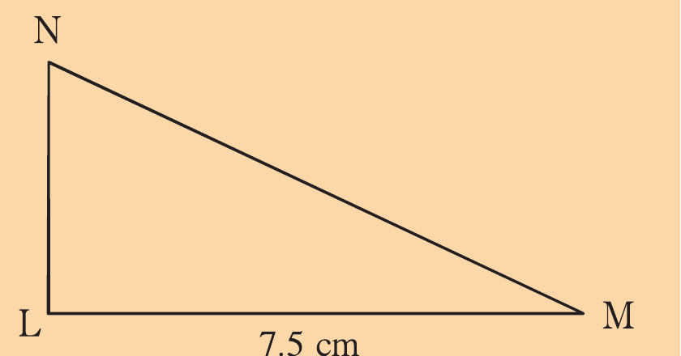
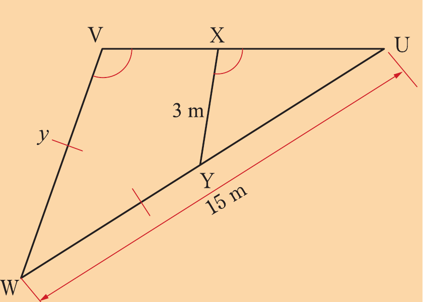
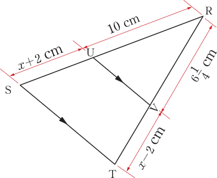

Similarity

12. It is given that ΔUVW and ΔUXY are similar with UXŶ = WVX̂ and WY = VW.
Find the value of y.

13. In the following figure, find the value of x.

14. Show that the perimeters of similar triangles have the same ratio as their corresponding sides.
15. If k units are added to the length of each side of two similar triangles, are the new triangles still similar?
Justify your answer.
16. A teacher at Magoda Secondary School has tasked Adolfina with finding the height of a tall tree in front of the office.
Using the knowledge of similarity, how would you advise Adolfina to accomplish this task?
MATHEMATIC F2 v5.indd 4405/04/2026 13:05:26